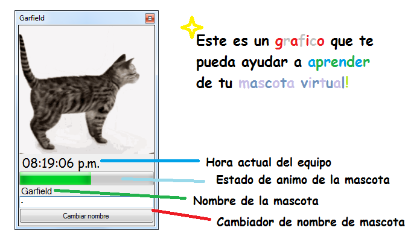
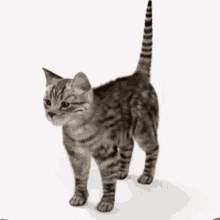

programa para Windows
Cat! es una aplicación simple de Windows con una mascota virtual que tiene animo y nombre.
Cat te quiere mucho, pero a veces por recuerdos de su mente, este se pone triste.
Descargar Cat! [Ejecutable cat.exe]  Programa creado por Santi9000 Pagina web de Santi9000